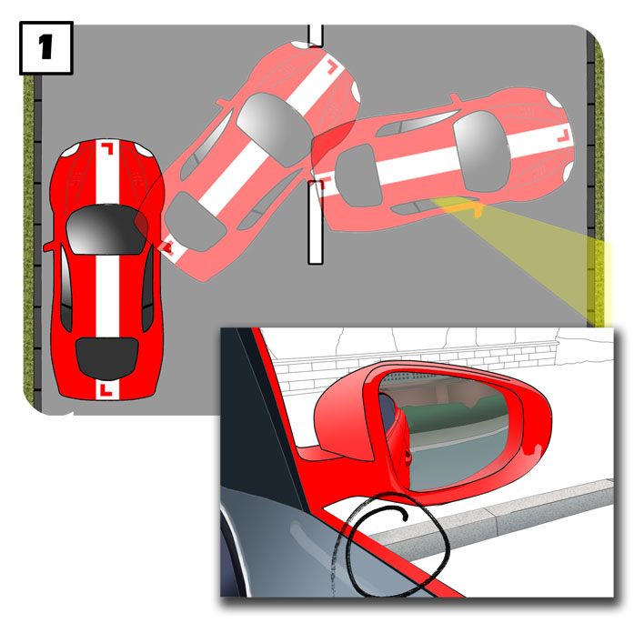
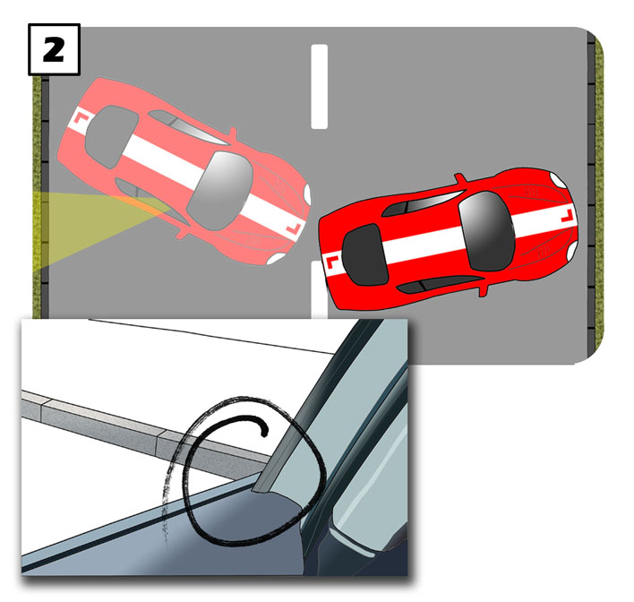
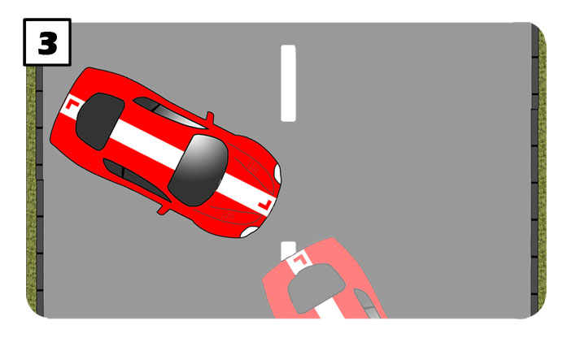
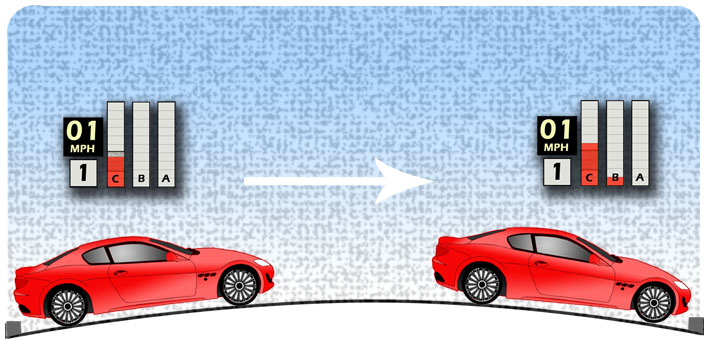
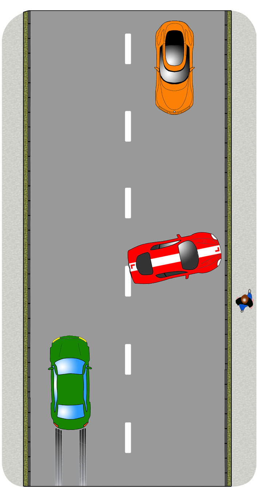
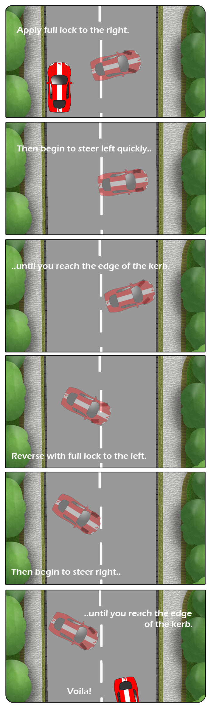

Use this technique to turn the car around to face the opposite direction. You will not be asked to carry out this manoeuvre on your driving test.
Find a safe, legal and convenient location, avoiding busy roads, junctions, crossings and obstacles like trees or lamp-posts which are very close to the kerb.

1. From a parked position, close and level with the kerb, make a good all round check. During the manoeuvre you’ll be blocking the road so let nearby traffic pass before beginning. Register any approaching pedestrians so that you’re prepared to respond as they pass.
When it’s clear, move away very slowly applying full lock quickly to the right. Look up and down the road as you turn.
To begin with, your instructor can help you stop when nice and close to the opposite kerb so that you’re using the whole of the road. Study the point where the kerb meets the doorframe so that you’re familiar with it for future reference. This point may look slightly different, depending on your height and seating position. The illustration is just an example.

2.With the car secure, (footbrake or handbrake), select reverse and find the biting point.
Make a thorough, all round check, finishing with a look over your left shoulder, directly out of the rear window .
As you begin to move, steer full lock quickly to the left. Look all around as you cross the road and over your right shoulder as you near the other side. Again, your instructor can help you stop close to the kerb and you can remember where you see it meeting the doorframe.

3.Secure the car again, select first and find the biting point.
Look both ways and, if it is safe to proceed, move slowly forward, steering quickly to the right as much as is required.
You may be able to steer smoothly and complete the manoeuvre but be careful that your front left corner is not too close to the kerb. If you think you might touch the kerb, then stop and repeat the process to allow yourself more space.
Dealing With The Camber

Roads slope towards their gutters so that rainwater can drain easily. This feature is called the camber.
When driving up the camber, you might be able to move the car slowly by teasing the biting point. You may need a little gas.
To keep the car moving very slowly when rolling down the camber might require a little brake. Dab it as required. The clutch can be down just under the biting point.
Dealing With Other Traffic
If vehicles approach as you’re carrying out the manoeuvre, pause at the edge of the road so they have space to pass. They may wait, in which case, proceed with caution.
Pause the manoeuvre as you approach pedestrians walking past the front or rear of the car.

Using Opposite Steering
You can start to steer from full lock before you reach the edge of the road. This can help to keep the turning circle nice and tight but be careful not to turn back too early as this can have the opposite effect.
